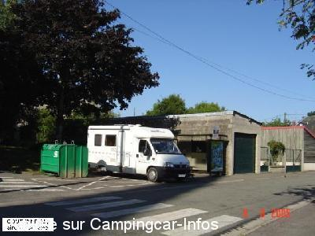
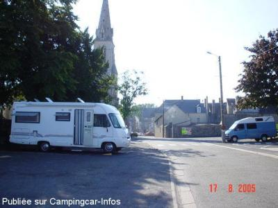

ASN = Aire de services avec stationnement nuit possible de :
COUTERNE
(N° 609)
Accès/adresse :
Rue Alexis Barre N976
Place de la Mairie
61410 COUTERNE
Place de la Mairie
61410 COUTERNE
Latitude : (Nord) 48.51223° Décimaux ou 48° 30′ 44′′
Longitude : (Ouest) -0.41417° Décimaux ou 0° 24′ 51′′
Tarif : Gratuit
Services :


Autres informations :
10 emplacements
Stationnement limité à 1 nuit
Tel +33(0)233 379 707

Le 18/06/2006 par christianbrieuc

Le 07/03/2006 par Jean-Marie
de
maryline Lucas
le 13/11/2012 :
aire gratuite, mais pour se garer pas moyen car le parking est occupé par les voitures, merci à la commune pour son effort par accueillir les cc mais il faudrait peut-être délimiter les emplacements réservés aux cc.
aire gratuite, mais pour se garer pas moyen car le parking est occupé par les voitures, merci à la commune pour son effort par accueillir les cc mais il faudrait peut-être délimiter les emplacements réservés aux cc.
de
allouy pierre
le 26/04/2010 :
impossible d'y passer la nuit le parking entierement utiliser par des voitures de passage le 15/04/2010
impossible d'y passer la nuit le parking entierement utiliser par des voitures de passage le 15/04/2010
de
Folghera Gilles
le 27/04/2007 :
Aire de repos tranquille, à proximité de tous commerces. Ce vous conseille la pizzeria la couternoise, vous pouvez y aller de la part de Gillou, j'y ai fait une très bonne impression.
Aire de repos tranquille, à proximité de tous commerces. Ce vous conseille la pizzeria la couternoise, vous pouvez y aller de la part de Gillou, j'y ai fait une très bonne impression.
de
Christian BRIEUC
le 18/06/2006 :
Services gratuits....emplacement difficile d'accès en raison présence containeurs à ordures....Stationnement limité aux véhicules de petit gabarit.
Services gratuits....emplacement difficile d'accès en raison présence containeurs à ordures....Stationnement limité aux véhicules de petit gabarit.